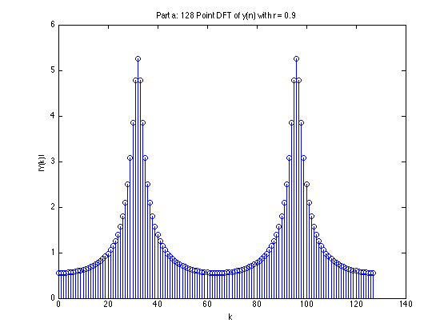
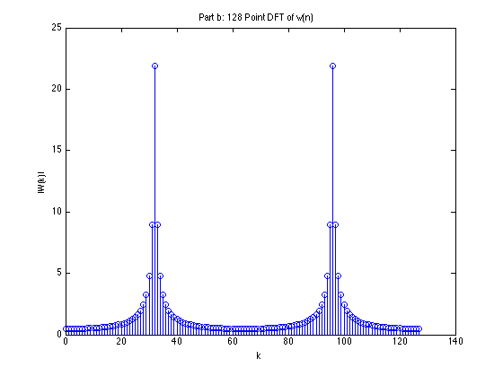

Homework 8.37
Contents
Part a
clear all; % Define constants and input x. N = 128; n = 0:127; x = zeros(size(n)); x(1) = 1; r = 0.9; % Compute the sequence from the difference equation. for i = 1:128 if i >= 3 y(i) = y(i-2)*(-r^2)+x(i); else y(i) = x(i); % Since y(-1) & y(-2) = 0 end end y = y(1:128); % Compute a N = 128 Point DFT: using Matlab's FFT algorithm Y = fft(y, N); figure; stem(0:N-1, abs(Y)); xlabel('k') ylabel('|Y(k)|') title('Part a: 128 Point DFT of y(n) with r = 0.9');
Part b
From this we can conclude that w acts as a window on y, since W(k) has peaks in the same place as y and it suppresses sidelobes. It is performing a point by point multiplication on y in the time domain.
w = (0.92).^(-n).*y; W = fft(w, N); figure; stem(0:N-1, abs(W)); xlabel('k'); ylabel('|W(k)|'); title('Part b: 128 Point DFT of w(n)');
Part c
clear all; % Define constants and input x. N = 128; n = 0:127; x = zeros(size(n)); x(1) = 1; r = 0.50; % Compute the sequence from the difference equation. for i = 1:128 if i >= 3 y(i) = y(i-2)*(-r^2)+x(i); else y(i) = x(i); % Since y(-1) & y(-2) = 0 end end y = y(1:128); % Compute a N = 128 Point DFT: using Matlab's FFT algorithm Y = fft(y, N); figure; stem(0:N-1, abs(Y)); xlabel('k') ylabel('|Y(k)|') title('Part c: 128 Point DFT of y(n) with r = 0.5');
Part d
This time w(n) shows the spectral peaks of y(n) even more clearly. In fact we totally suppress anything that is +/- more than a few k values of the main peaks.
w = (0.55).^(-n).*y; W = fft(w, N); figure; stem(0:N-1, abs(W)); xlabel('k'); ylabel('|W(k)|'); title('Part d: 128 Point DFT of w(n) = 0.55^-^n y(n)');
Part e
In the prescence of noise w does not demonstrate the peaks of the spectrum as well as it did before noise was added, in fact it has added some significant energy in the center of the spectrum.
clear all % Define constants and input x. N = 128; n = 0:127; x = zeros(size(n)); x(1) = 1; r = 0.50; % Define the noise var = 0.1; sdev = sqrt(var); noise = sdev*randn(size(n)); % Compute the sequence from the difference equation. for i = 1:128 if i >= 3 y(i) = y(i-2)*(-r^2)+x(i); else y(i) = x(i); % Since y(-1) & y(-2) = 0 end end y = y(1:128); y = y + noise; % Compute a N = 128 Point DFT: using Matlab's FFT algorithm Y = fft(y, N); figure; stem(0:N-1, abs(Y)); xlabel('k') ylabel('|Y(k)|') title('Part e-c: 128 Point DFT of y(n)+noise with r = 0.5'); w = (0.55).^(-n).*y; W = fft(w, N); figure; stem(0:N-1, abs(W)); xlabel('k'); ylabel('|W(k)|'); title('Part e-d: 128 Point DFT of w(n) = 0.55^-^n y(n)');